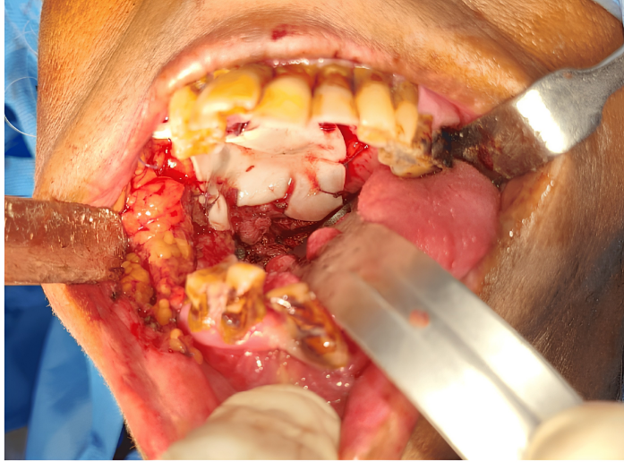
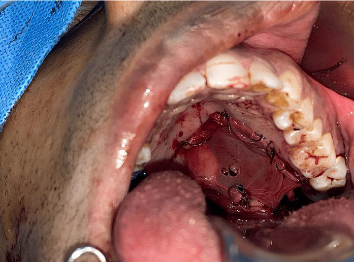
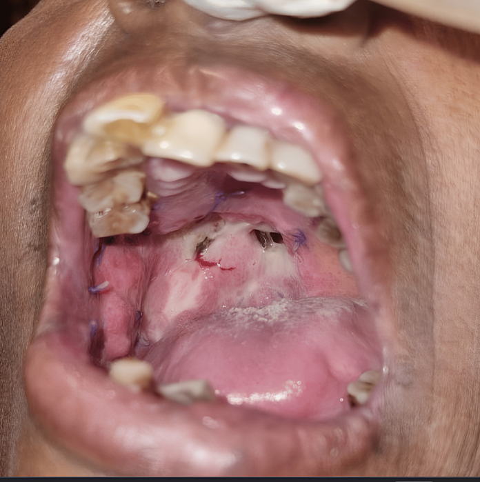
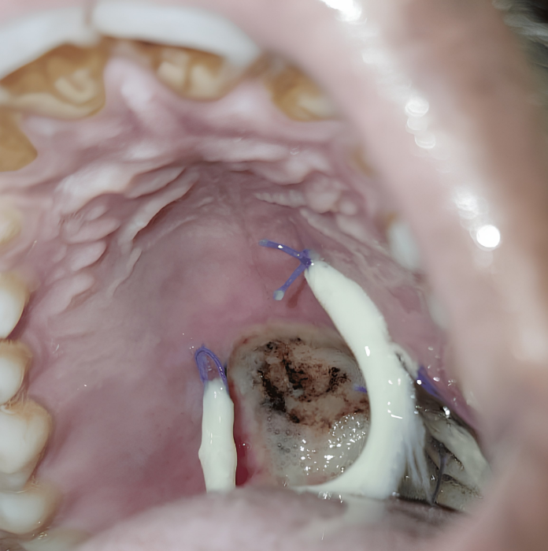
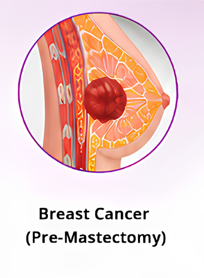
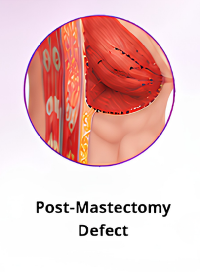
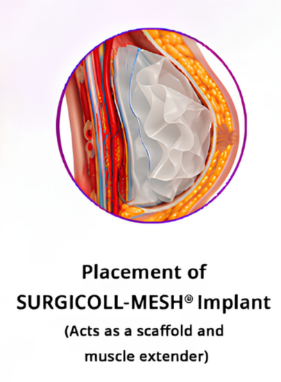
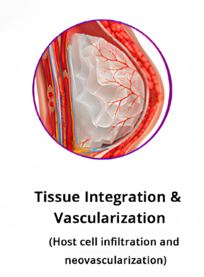
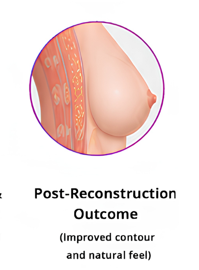

Surgicoll-Mesh®
Surgical Oncology
Implantable, bioresorbable, tissue regenerative sterile Type-I Collagen matrix. Designed for reconstructive surgery, chronic wounds, diabetic ulcers, burns and soft tissue repair.
Surgical Oncology
Implantable, bioresorbable, tissue regenerative sterile Type-I Collagen matrix. Designed for reconstructive surgery, chronic wounds, diabetic ulcers, burns and soft tissue repair.

Oral cancer refers to malignant neoplasms that arise in the tissues of the mouth and oropharynx. These include cancers of the lips, tongue, gums, floor of the mouth, cheeks, hard and soft palate, and throat. The vast majority are squamous cell carcinomas originating from the mucosal lining.
Oral cancer is one of the most prevalent cancers worldwide, particularly in South and Southeast Asia where risk factors such as tobacco use, areca nut (betel nut) chewing, and alcohol consumption are common. It imposes a significant burden on individuals, families, and healthcare systems due to its impact on basic functions including speaking, eating, and swallowing.
Early detection is critical when diagnosed at a localised stage, the five-year survival rate improves substantially. However, a large proportion of cases are still diagnised at an advanced stage, making treatment more complex and outcomes less favourable. Raising awareness among patients and healthcare providers remains one of the most effective public health strategies.
Oral cancer can develop at multiple sites within the oral cavity and oropharynx. The most frequently involved locations include:
Pre-cancerous lesions such as leukoplakia (white patches) and erythroplakia (red patches) often precede malignant transformation and are critical to identify during routine dental or clinical examinations.




Surgical excision remains the cornerstone of oral cancer treatment. Following tumour removal, reconstruction of the defect site is essential for restoring form and function.
Bioresorbable collagen matrices such as Surgicoll-Mesh® (Membrane Form) represent an innovative approach to oral cancer excision repair. Acting as a scaffold that is naturally and progressively integrated, remodelled, and eventually replaced by functional host tissue, they offer clear advantages over synthetic alternatives in supporting healing after oncological surgery.
See the clinical application of Surgicoll-Mesh® in the management of post-surgical mucosal defects following oral cancer excision. The membrane becomes soft and supple when hydrated with normal saline, mimicking native tissue.
The collagen membrane is secured with 3-0 Vicryl sutures and quilted to accommodate wound drainage. Patients typically return to normal oral feeding from the 3rd post-operative day, with the membrane undergoing resorption by day 7 revealing healthy epithelial tissue underneath.
Two independent clinical studies confirming the superior wound healing performance of Surgicoll-Mesh® in oral mucosal defects.
A clinical study evaluating the effectiveness of bovine-derived collagen (Surgicoll-Mesh®, 0.5 mm) in surgical oral mucosal defects. Thirty-two patients (8 female, 24 male, ages 18–65) who underwent surgery for benign, premalignant, and malignant oral cavity lesions were enrolled from 2012–2018. Cases included leukoplakia, oral submucous fibrosis (OSMF), mucocele, fibromas, and malignant lesions.
The membrane was soaked in normal saline for a minimum of 5 minutes, adapted to the mucosal defect, trimmed with scissors, and secured with 3-0 Vicryl sutures. Patients were evaluated at Day 3, 7, 30, and 3 months using the Bessho et al. scoring criteria.
| Parameter | Good | Fair | Poor |
|---|---|---|---|
| Haemostasis | 81.25% | 18.75% | 0% |
| Pain Relief | 68.75% | 31.25% | 0% |
| Granulation Tissue | 87.5% | 12.5% | 0% |
| Epithelialisation | 93.75% | 6.25% | 0% |
| Contracture Control | 62.5% | 25% | 12.5% |
| Overall Effectiveness | 81.25% | 18.75% | 0% |
Within 1 week, 75% of patients reverted back to normal eating habits. No allergic reactions were reported in any patient.
Phase 1 double-blind randomized controlled clinical trial (CTRI-REF/2023/12/076231). 20 patients divided into two equal groups.
Parameters assessed at 2 weeks: epithelialization, granulation tissue formation, and wound contraction. Independent sample t-test conducted at 95% confidence interval.
SurgiColl-Mesh® has an average porosity of 20 microns (vs. >800 microns in conventional membranes), yielding better cell infiltration and regenerative factor availability. No adverse reactions occurred in either group.
Breast cancer reconstruction (also called breast reconstruction surgery) is a surgical procedure used to rebuild the shape, appearance, and symmetry of the breast after breast cancer treatment, usually after a mastectomy (removal of the breast) or lumpectomy (partial removal of breast tissue).
Helps restore the natural contour and structure of the breast.
Improves balance and appearance after treatment.
Supports physical and emotional healing after cancer care.





SURGICOLL-MESH® bridges the gap left after tumor excision. Once placed, the bioresorbable collagen matrix acts as a temporary scaffold that extends the pectoralis muscle, giving surgeons a stable structure for implant-based reconstruction. Over the following weeks, the patient's own cells migrate into the matrix, new blood vessels form, and the scaffold is gradually resorbed and replaced by natural tissue—restoring breast contour with a result that looks and feels like the patient's own.
Evaluating the safety, efficacy, and biological tissue regeneration of High-Purity Type-I Collagen (HPTC) scaffolds in breast cancer excision repair.
Breast-conserving surgery (BCS) causes volume displacement defects, asymmetry, and contour deformities that significantly lower post-operative patient satisfaction scores. Standard tissue substitutes carry donor site morbidity.
Implantation of the HPTC scaffold immediately following excision provides stable volume restoration, excellent early structural retention, and clear radiologic integration visible on imaging follow-up.
Demonstrated to be a completely safe and biologically active matrix option, showing high cosmetic satisfaction scores with minimal complications, zero allergic reactions, and no tissue rejection across all study patients.
Review or download comprehensive specifications, product literature, and peer-reviewed publications.